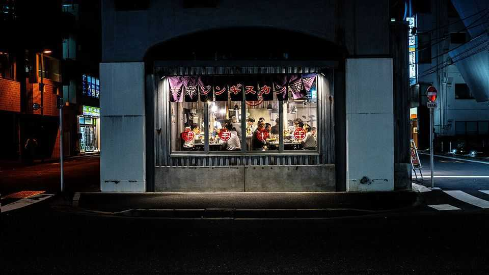
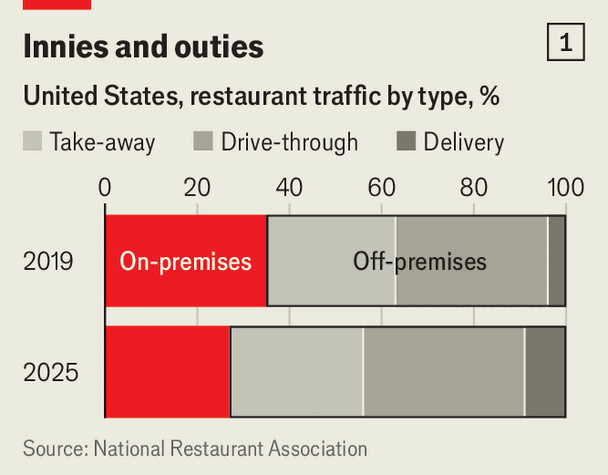
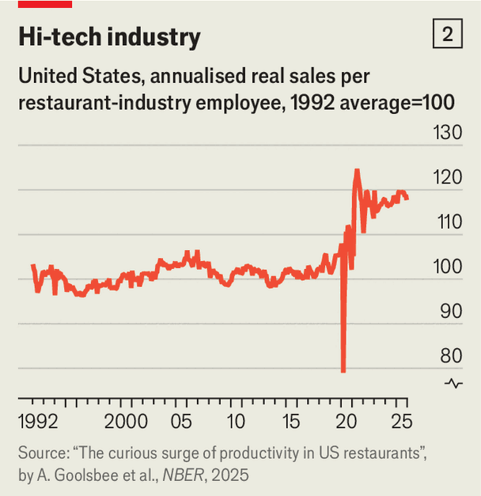

The restaurant business is changing beyond recognition
Blame technology, inflation and customers’ shifting habits

Jul 30th 2026
CALL IT A brunch bonanza. On days in 2024 when Taylor Swift was performing in Miami, eateries within 20 miles of the venue that use software made by Toast, which helps 164,000 restaurants manage inventories and payments, registered a 27% surge in omelette sales. Fans appeared to be packing in protein to prepare for the pop marathon ahead. By the same token, when Beyoncé played Atlanta a year later, Toast recorded a spike in sales of hard seltzer and late-night meals, peaking at 4am as concert-goers streamed home.
Such data are handy for restaurants trying to optimise inventories and staffing levels to capitalise on big events. Toast’s chief marketing officer, Kelly Esten, says the firm wants to take its number-crunching further, and use artificial intelligence not just in the storerooms and kitchen, but in the dining area, too. Toast is toying with adding transcription software to the hand-held gadgets that waiters use to record orders and take payments, so that they can keep buttering up customers with fewer distractions. She thinks cameras around the dining room could help alert workers to customers’ needs. Automated records and face recognition might allow front-of-house staff to offer regulars their favourite table or drink as soon as they enter.
The way restaurants are run is changing at breakneck pace. The reasons are not just whizzy technology like Toast’s, which is used only by a small slice of businesses, but also shifting consumer habits and stubborn inflation, which heightens competitive pressures. It has always been a famously unforgiving business. That remains true—but almost every other aspect of the industry is evolving rapidly.
Customers’ habits are the most obvious change. The covid-19 pandemic and the accompanying lockdowns put roughly a tenth of restaurants in America and Britain out of business in 2020 alone. In China, the world’s largest market for eateries, the risk a restaurant would close rose by 12.7% for every 12 days a lockdown was imposed nearby, according to a study published last year. In countries where governments offered little support, the industry took an especially big hit. In India roughly a quarter of formal food-service businesses closed for good after 2020, according to its National Restaurant Association, and a third of restaurant workers lost their jobs.
Even as restrictions were dropped, people continued to work from home more and commute to city centres on fewer days. Pret A Manger, a British sandwich chain, says its stores near suburban high streets are now busier than those in financial districts. OpenTable, a reservations site, reported last year that Thursday had overtaken Friday as the peak dining night in both London and New York. Diners have also taken to eating earlier, concentrating demand in fewer seatings.

Ordering in rather than eating out is a pandemic habit that has stuck: almost three of every four restaurant meals in America were consumed off-site in 2025, and deliveries’ share has more than doubled since the onset of the pandemic, according to America’s National Restaurant Association (see chart 1). The global online food-delivery market is projected to reach $473bn this year, roughly double its pre-pandemic size, according to Upmetrics, a business-software firm. Conversely, says Kate Nicholls, head of UKHospitality, a trade body, visits to restaurants remain 15% below pre-covid levels.
Perhaps most consequentially of all, the pandemic prompted lots of people who had lost their previous jobs to open a restaurant. That is because of hospitality’s low barriers to entry. A study published last year in South Korea found that most newly self-employed workers were over 50, and that most of those had started businesses in food or similar service industries, to little or no profit. In Mexico, where informal employment accounts for some 55% of the workforce, according to the OECD, many people have opened restaurants because they could not find employment elsewhere, says Hugo Vela, until recently chairman of CANIRAC, Mexico’s largest trade body for restaurants. The number of restaurants there grew by 6% in 2024 and 3% in 2025—though the industry’s total sales remain below 2019 levels.
The result is even stiffer competition than usual, in an era when many countries are suffering from high inflation or anaemic economic growth, which encourage penny-pinching. There have never been more food outlets in America, but fully 42% of them were unprofitable last year, according to the National Restaurant Association there. China’s economic doldrums have spurred an especially brutal crunch. Fitch, a ratings firm, reported that average spending per customer at some big Chinese chains declined by 20% in the first half of 2024, compared with 2023. The average spend per meal fell 8.3% in the first half of 2025, according to Meituan, China’s biggest delivery platform.
Many restaurants are resorting to radical strategies to keep costs down. Saizeriya, an Italian-fusion chain with 1,000 branches across Japan, prides itself on having scarcely raised its prices in decades. To keep them low, it has cut out middlemen by building its own factories to mill rice and prepare other ingredients. It even has a plant in Australia to make béchamel, which is cheaper than shipping lots of milk to Japan and processing it there. The kitchens in the branches need few cooks—and no knives—since all the ingredients are delivered pre-sliced. Technology has supplanted front-of-house staff: customers scan QR codes to read the menu; robots deliver their orders and an automated cashier takes payments.
Such trends are not limited to Japan. Some big British chains, including Wagamama and Wasabi, are moving some of their food preparation from branches in city centres to more remote locations, where rent and other overheads are cheaper. Karma Kitchen runs six sites in the suburbs of London, where it rents out dozens of commercial kitchen units. At its 20,000-square-foot warehouse in Crystal Palace, a vegan chocolate producer works wall-to-wall with a team of Asian chefs boiling pots of chicken soup for Din Tai Fung, an upmarket dumpling chain. Gini Newton, Karma’s co-founder, says that the sites are built to accommodate restaurateurs, with cold and dry storage, an industrial ventilation system, parking and wide corridors for large deliveries, and to handle all operations for companies, arranging repairs and cleaners. They can also negotiate cheaper electricity. “That gives huge savings if you’re cooking broth 24 hours per day,” she says.
A study published last year by Austan Goolsbee, Chad Syverson, Rebecca Goldgof and Joe Tatarka found that the rise in takeaway orders during the pandemic forced American restaurants to automate. Many introduced smartphone apps, drive-through lanes and delivery shelves. That presumably contributed to a jump of 15% in real labour productivity in the industry, after almost 30 years of stagnation (see chart 2). Many continue to innovate: Sweetgreen, an American lunch chain, says its automated assembly line produces 500 personalised salad bowls in an hour.

Deliveries also allow eateries to expand their customer base. In China younger diners who cannot afford lavish meals are turning to meal kits sold by restaurants. That was visible during the Lunar New Year in February—a holiday during which families traditionally dine out on elaborate dishes—as many households bought pre-cooked meals instead. The value of ready-made dishes for the occasion jumped eightfold from right before the pandemic to 262.6bn yuan ($38.5bn), according to iiMedia Research, a consultancy.
But at the same time, takeaways make it more difficult to connect with diners, many of whom may never even come through their doors. That has made upscale restaurants more reluctant to offer deliveries. Dishoom, an upmarket British curry-house chain, tries to re-create the restaurant experience by including freebies with its takeaway orders. These include the same incense that is burned in restaurants, a QR code with a suggested playlist and separately packed garnishes to bring a fresh flourish of coriander and lime to the boxed-up curries. “Hopefully that entices them to come and experience the full version in the restaurant,” says Brian Trollip, CEO of Dishoom.
Union Square Hospitality Group, which runs a dozen or so restaurants in New York, says they have reformulated menus and packaging to adjust to demand for takeaways. Their new restaurants are now built with a separate lane for pickups to avoid disrupting diners.
All these pressures are having the biggest impact on middle-market restaurants, or casual dining in the jargon. “The casual dining element of the sector has disappeared,” says Mr Trollip, “because it’s no longer casual to decide to go out to eat any more.” At the top end, diners have become “less forgiving”, he says. Inflation has squeezed budgets, and home entertainment has improved. “If you’re asking people to leave their homes, pay for the taxi, pay for the babysitter and spend more on the meal as well—it needs to really feel special,” he says.
Osteria 166 in downtown Buffalo was turning over $60,000 a week in meatball spaghetti and generous martinis. But since the pandemic, says its owner, Nick Pitillio, his regulars no longer commute to the city every day and rarely linger for happy hour. His weekly earnings had shrunk to $15,000 by the time he decided to close his à la carte dining room and instead offer lunchtime counter meals of slices of pizza and salads, lowering the average bill by 25%. “The $80 tomahawk steak has no place any more,” says Mr Pitillo.
But change need not spell despair. Many in the industry remain optimistic. “The dull roar of conversation in a dimly lit dining room, the clink of glass,” says Jot Condie, head of the California Restaurant Association. “That is something people will always enjoy.” ■